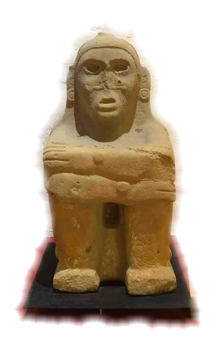

Museo de Castillo de Teayo, Ver.

Una pirámide, como muy pocas, que aún conserva
una gran escalinata entera y un templo en la cima,
y representa el testimonio de una importante ciudad
huasteca que fue influenciada por los toltecas y mexicas.
El museo invita a conocer una original colección de esculturas
de Tláloc y Xipe Tótec, dioses de la lluvia y el maíz.